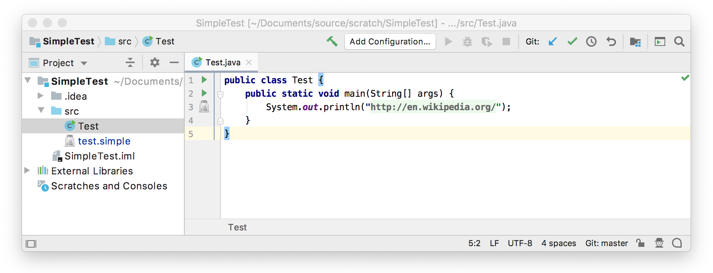

12. Folding Builder
A folding builder identifies the folding regions in the code. In this step of the tutorial, the folding builder is used to identify folding regions and replace the regions with specific text. Rather than the usual practice of using a folding builder to collapse a class, method, or comments to fewer lines, the folding builder replaces Simple Language keys with their corresponding values.
12.1. Define a Folding Builder
The SimpleFoldingBuilder replaces usages of properties with their values by default.
Start by subclassing FoldingBuilderEx
Note that SimpleFoldingBuilder also implements DumbAware, which means the class is allowed to run in dumb mode, when indices are in background update.
The buildFoldRegions() method searches down a PSI tree from root to find all literal expressions containing the simple prefix simple:.
The remainder of such a string is expected to contain a Simple Language key, and so the text range is stored as a FoldingDescriptor.
The getPlaceholderText() method retrieves the Simple Language value corresponding to the key associated with the (ASTNode) provided.
The IntelliJ Platform uses the value to substitute for the key when the code gets folded.
// Copyright 2000-2020 JetBrains s.r.o. and other contributors. Use of this source code is governed by the Apache 2.0 license that can be found in the LICENSE file.
package org.intellij.sdk.language;
import com.intellij.lang.ASTNode;
import com.intellij.lang.folding.*;
import com.intellij.openapi.editor.*;
import com.intellij.openapi.project.*;
import com.intellij.openapi.util.TextRange;
import com.intellij.psi.*;
import com.intellij.psi.util.PsiTreeUtil;
import org.intellij.sdk.language.psi.SimpleProperty;
import org.jetbrains.annotations.*;
import java.util.*;
public class SimpleFoldingBuilder extends FoldingBuilderEx implements DumbAware {
@NotNull
@Override
public FoldingDescriptor[] buildFoldRegions(@NotNull PsiElement root, @NotNull Document document, boolean quick) {
// Initialize the group of folding regions that will expand/collapse together.
FoldingGroup group = FoldingGroup.newGroup(SimpleAnnotator.SIMPLE_PREFIX_STR);
// Initialize the list of folding regions
List< FoldingDescriptor > descriptors = new ArrayList<>();
// Get a collection of the literal expressions in the document below root
Collection< PsiLiteralExpression > literalExpressions =
PsiTreeUtil.findChildrenOfType(root, PsiLiteralExpression.class);
// Evaluate the collection
for ( final PsiLiteralExpression literalExpression : literalExpressions ) {
String value = literalExpression.getValue() instanceof String ? (String) literalExpression.getValue() : null;
if ( value != null && value.startsWith(SimpleAnnotator.SIMPLE_PREFIX_STR + SimpleAnnotator.SIMPLE_SEPARATOR_STR) ) {
Project project = literalExpression.getProject();
String key = value.substring(SimpleAnnotator.SIMPLE_PREFIX_STR.length() + SimpleAnnotator.SIMPLE_SEPARATOR_STR.length());
// Get a list of all properties for a given key in the project
final List<SimpleProperty> properties = SimpleUtil.findProperties(project, key);
if ( properties.size() == 1 ) {
// Add a folding descriptor for the literal expression at this node.
descriptors.add(new FoldingDescriptor(literalExpression.getNode(),
new TextRange(literalExpression.getTextRange().getStartOffset() + 1,
literalExpression.getTextRange().getEndOffset() - 1),
group) );
}
}
}
return descriptors.toArray(new FoldingDescriptor[descriptors.size()]);
}
/**
* Gets the Simple Language 'value' string corresponding to the 'key'
* @param node Node corresponding to PsiLiteralExpression containing a string in the format
* SIMPLE_PREFIX_STR + SIMPLE_SEPARATOR_STR + Key, where Key is
* defined by the Simple language file.
*/
@Nullable
@Override
public String getPlaceholderText(@NotNull ASTNode node) {
String retTxt = "...";
if ( node.getPsi() instanceof PsiLiteralExpression ) {
PsiLiteralExpression nodeElement = (PsiLiteralExpression) node.getPsi();
String key = ((String) nodeElement.getValue()).substring(SimpleAnnotator.SIMPLE_PREFIX_STR.length() + SimpleAnnotator.SIMPLE_SEPARATOR_STR.length());
final List< SimpleProperty > properties = SimpleUtil.findProperties(nodeElement.getProject(), key);
String place = properties.get(0).getValue();
// IMPORTANT: keys can come with no values, so a test for null is needed
// IMPORTANT: Convert embedded \n to backslash n, so that the string will look
// like it has LF embedded in it and embedded " to escaped "
return place == null ? retTxt : place.replaceAll("\n", "\\n").replaceAll("\"", "\\\\\"");
}
return retTxt;
}
@Override
public boolean isCollapsedByDefault(@NotNull ASTNode node) {
return true;
}
}
12.2. Register the Folding Builder
The SimpleFoldingBuilder implementation is registered with the IntelliJ Platform in the plugin configuration file using the com.intellij.lang.foldingBuilder extension point.
<extensions defaultExtensionNs="com.intellij">
<lang.foldingBuilder language="JAVA"
implementationClass="org.intellij.sdk.language.SimpleFoldingBuilder"/>
</extensions>
12.3. Run the Project
Rebuild the project, and run simple_language_plugin in a Development Instance.
Now when a Java file is opened in the Editor, it shows the property’s value instead of the key.
This is because SimpleFoldingBuilder.isCollapsedByDefault() always returns true.
Try using Code | Folding | Expand All to show the key rather than the value.
